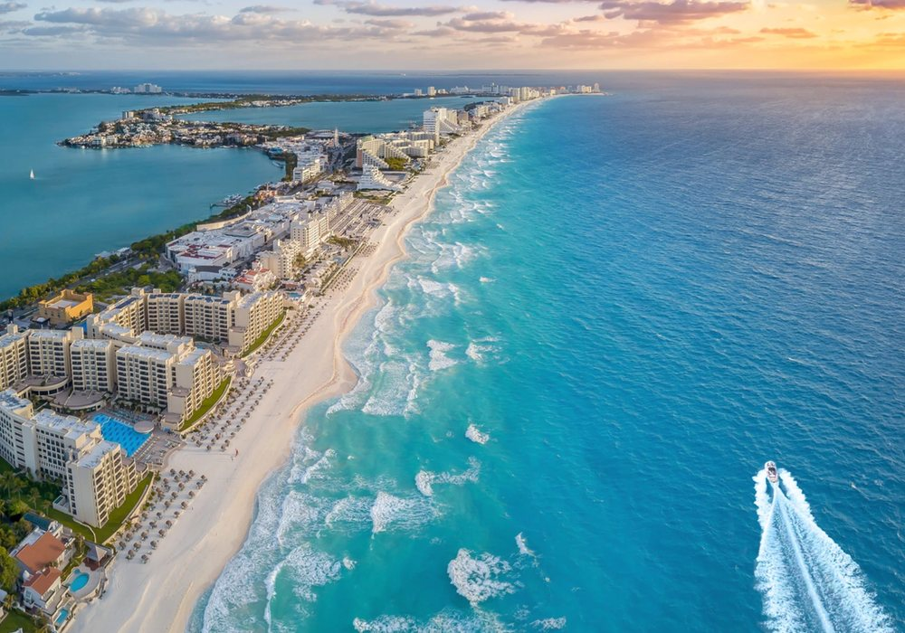
Playa
Cancún
Quintana Roo
Playas de arena blanca y mar turquesa en el Caribe mexicano.
Cotizar este destinoElige tu próxima aventura
Playas, pueblos mágicos, aventura y ciudades del mundo, nacionales e internacionales.
Filtra por tipo de viaje. Si buscas otro lugar, también lo organizamos.

Quintana Roo
Playas de arena blanca y mar turquesa en el Caribe mexicano.
Cotizar este destino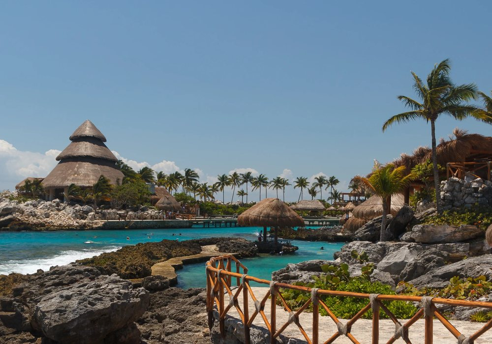
Quintana Roo
Costa del Caribe con playas, cenotes y zonas arqueológicas mayas.
Cotizar este destino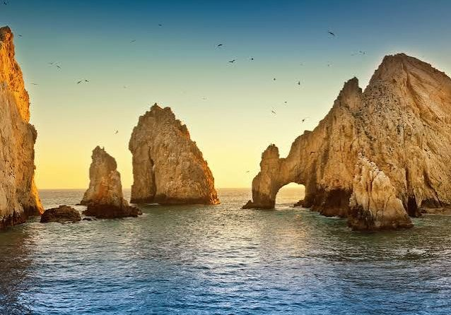
Baja California Sur
Mar, desierto y el famoso Arco en la punta de la península.
Cotizar este destino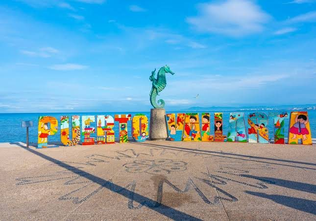
Jalisco
Malecón, playas del Pacífico y atardeceres frente al mar.
Cotizar este destino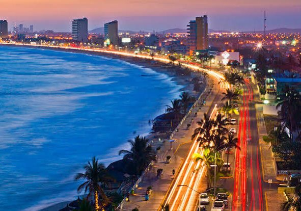
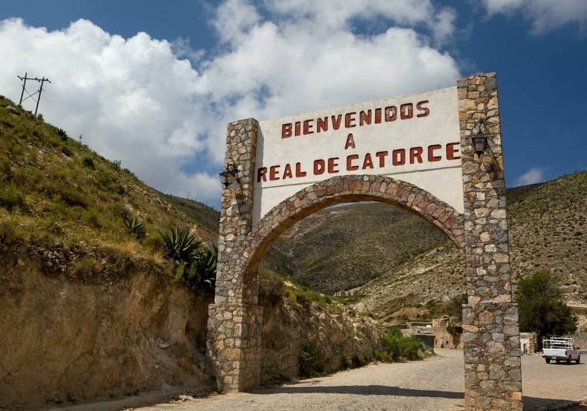
San Luis Potosí
Pueblo mágico en el desierto, con calles empedradas, historia minera y paisajes únicos.
Cotizar este destino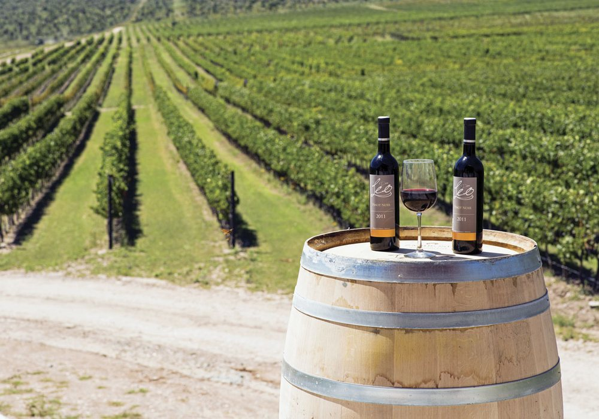
Coahuila
Pueblo mágico famoso por sus viñedos y sus vinos.
Cotizar este destino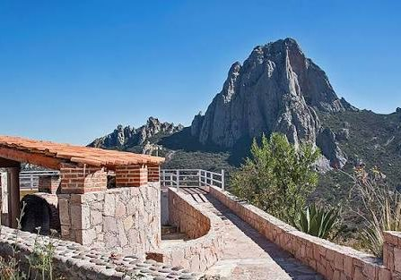
Querétaro
Pueblo mágico a los pies de la Peña de Bernal, uno de los monolitos más grandes del mundo.
Cotizar este destino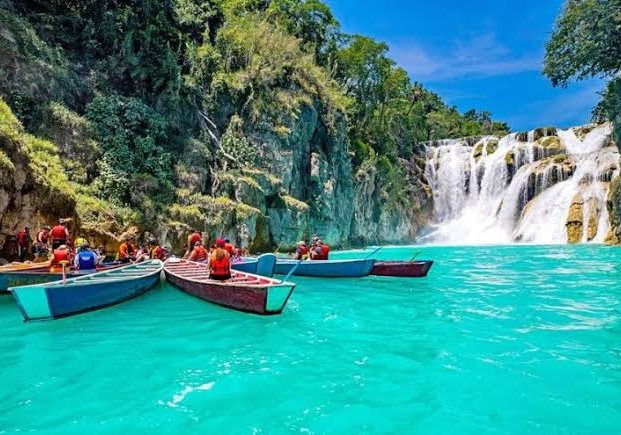
San Luis Potosí
Cascadas, ríos color turquesa y selva para vivir la aventura.
Cotizar este destino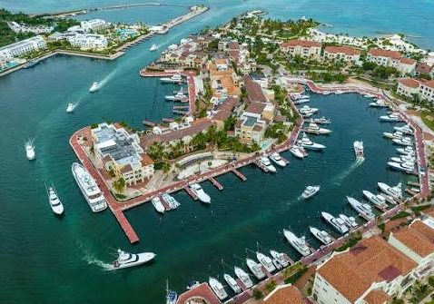
República Dominicana
Playas de ensueño y resorts en el Caribe.
Cotizar este destino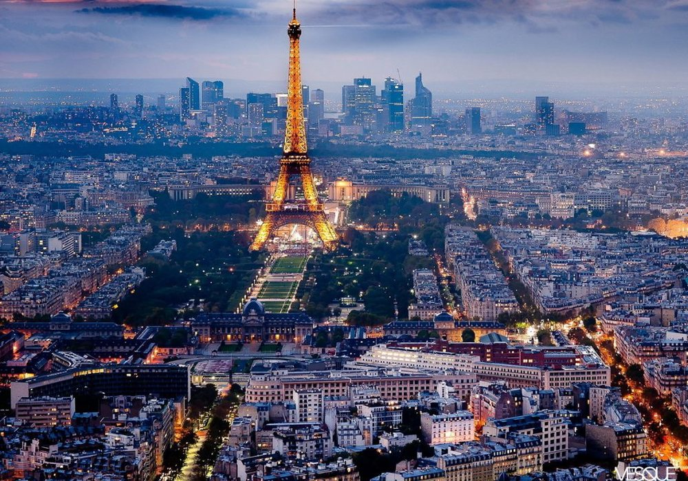
Francia
Torre Eiffel, museos y gastronomía en la ciudad de la luz.
Cotizar este destino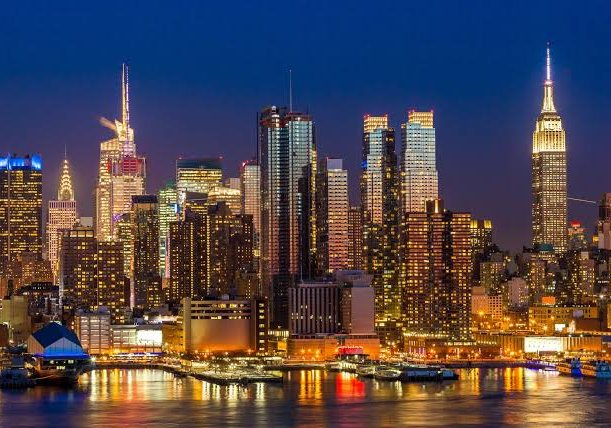
Estados Unidos
Rascacielos, Broadway y Central Park en la ciudad que nunca duerme.
Cotizar este destino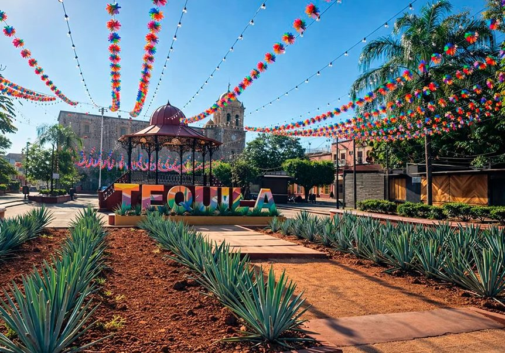
Jalisco
Pueblo mágico entre campos de agave, haciendas, destilerías y el famoso Tequila Express.
Cotizar este destino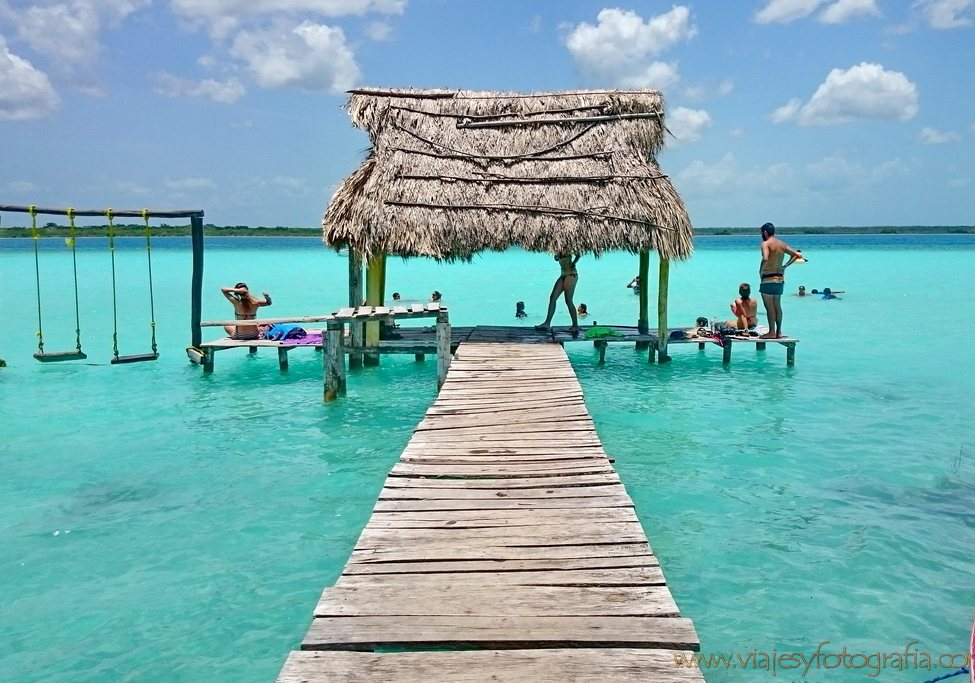
Quintana Roo
La Laguna de los Siete Colores: kayak, paddle board y cenotes en un pueblo mágico tranquilo.
Cotizar este destino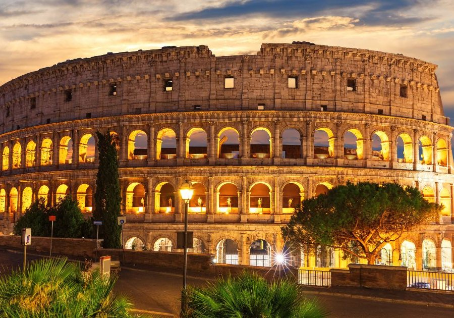
Italia
Coliseo, Fontana de Trevi y el Vaticano, con historia y pasta en cada esquina.
Cotizar este destinoCuéntanos a dónde quieres ir y te ayudamos a organizar todo tu viaje.